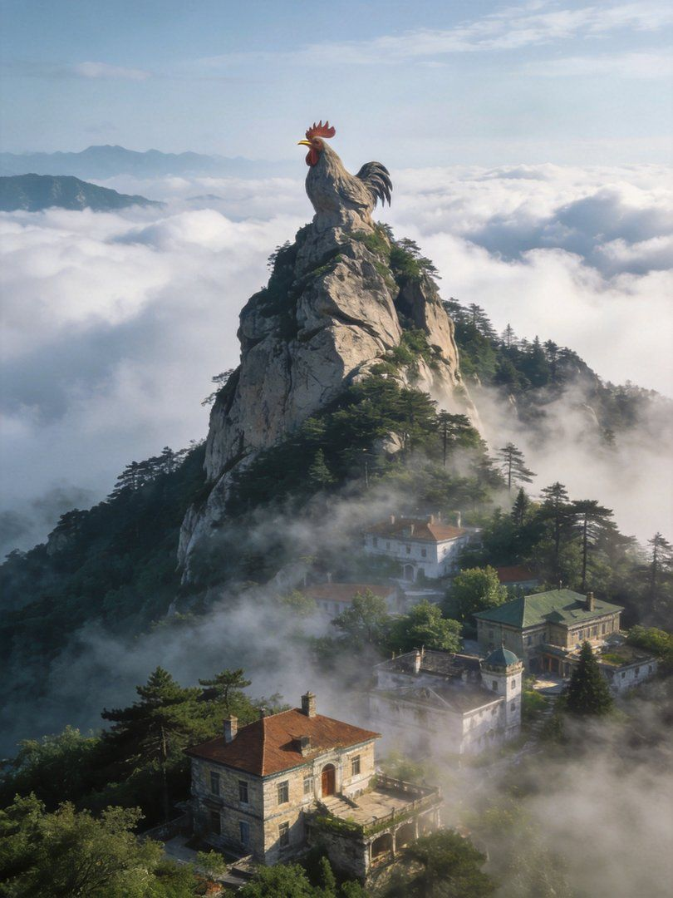

鸡公山 · 报晓峰SUMMER RESORT · 万国建筑
这是什么地方
- 信阳位于河南省南部，是信阳毛尖的故乡、豫南茶乡，山水兼备气候宜人。
- 核心是豫南明珠南湾湖（茶岛、鸟岛、猴岛三岛）与中国四大避暑胜地之一鸡公山（万国建筑别墅群）。
- 还有文新茶村、波尔登森林公园、郝堂村等，是周末“湖光山色＋茶香”慢游的好去处。
玩几天 & 参考价格
- 建议 2 天：一天南湾湖、一天鸡公山，节奏刚好。
- 南湾湖门票+船票约 ¥95-100，三岛全程需 4 小时左右。
- 鸡公山门票约 ¥60-80，观光车往返约 ¥40；文新茶村免费、采茶体验约 ¥50。
💡 必体验：南湾湖坐船登岛＋鸡公山避暑看万国别墅＋喝一杯地道信阳毛尖，缺一不完整。